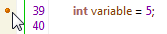
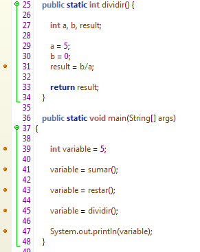
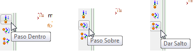
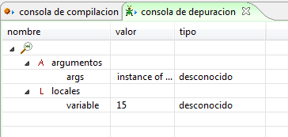

|
Framework Depurador |
 Figura 1. Variables en el Framework Depurador El depurador soporta la utilización de múltiples puntos de parada, a la vez que soporta diferentes métodos de navegación a través de estos. La Figura 2 muestra diferentes puntos de parada sobre multiples funciones en un escenario de depuración.  FIgura 2. Puntos de parada en el depurador El framework depurador permite recorrer todas las líneas de código (Paso Dentro), iniciar la depuración desde el punto de parada más próximo (Paso Sobre) o detener la ejecución en cada punto de parada establecido.  Figura 3. Pasos de Depuración El Framework de Depuración se integra en el marco de expresión del editor de código y en la consola de depuración en el marco de extensión, ademas es utilizado por varios Frameworks Derivados que integran su funcionalidad. La consola de depuración muestra información relevante al tipo y nombre de cada variable utilizada por el programa en el punto de parada, como se muestra en la Figura 4.  Figura 4. Variables inspeccionadas para los puntos de parada
|